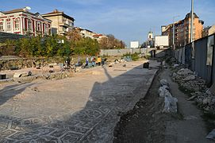
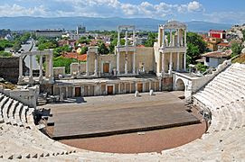
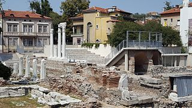
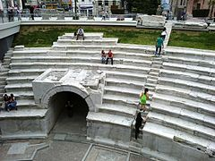
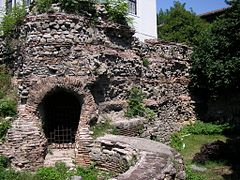
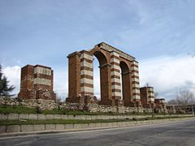
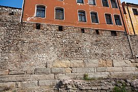
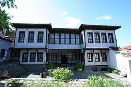
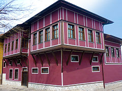

Забележителности
Античен град
Античният театър, погрешно известен и като Амфитеатъра, е най-голямото постижение в областта на реставрацията на паметниците от античността в България. Построен е в края на I век, по времето на римския император Домициан. Театърът е разположен в естествената седловина между Джамбаз тепе и Таксим тепе. Театронът е разчленен на два ранга от по четиринадесет реда седалки, отделени с хоризонтална пътека (диазома). Вероятно театърът е побирал около 3500 зрители. От южната страна на полукръглата орхестра се издига триетажната сценична постройка, украсена с фризове, корнизи и статуи. Театърът е проучен археологически от ст.н.с. Лилия Ботушарова, консервиран и реставриран под ръководството на арх. Вяра Коларова в периода 1968 – 1984 г. Тук се провеждат редица културни прояви, сред които Верди фестивал и Международният фолклорен фестивал.
Римският одеон е реставриран през 2004 г. Построен е през II-V в. и е вторият (или малкият) античен театър на Филипополис със седалки за 350 зрители. В действителност сградата е строена като булевтерион – седалище на градското събрание и по-късно е била реконструирана и пригодена за нуждите на покрита театрална сграда.
Римският форум от времето на император Веспасиан през I в. и доизграден през II в. се намира до днешната Централна поща в град Пловдив и в непосредствена близост до Римския одеон. Заема площ от 11 ха и е бил заобиколен от магазини и обществени сгради. Тук са се фокусирали главните улици на Древния Филипопол. Форумът е бил средоточие на административния, икономическия, културния и религиозния живот на античния град. Провеждали са се събрания, дебати, празници, държавни дела. Комплексът има почти квадратен план с размери 143 X 136 m.
Античният стадион е най-значителният паметник на античния град. Разположен е между източния склон на Сахат тепе и западния склон на Таксим тепе, в рамките на укрепения античен град. Простира от днешния площад „Римски стадион“ до площад „Каменица“ – стълбичките със статуята на Мильо. Построен е през II в. по времето на император Адриан, по модел на Делфийския стадион. Стадионът има дължина приблизително 240 m и широчина 50 m. Дължината на пистата е един римски стадий (около 600 римски стъпки). Съоръжението е побирало до 30 000 зрители, които са наблюдавали спортни състезания – Питийски, Александрийски и Кендрисийски игри. Понастоящем се виждат северната дъга на стадиона с 14 реда седалки, засводеният северен вход (сфендона), подземна улица и част от пистата.
Археологически комплекс „Ейрене“ се намира се в южното подножие на Трихълмието, от северната страна на античната улица в подлез „Археологически“. Комплексът представлява останки от представителна сграда, строена през III – IV в. и по всяка вероятност ползвана като резиденция от виден гражданин на Филипопол. Съществуват няколко версии коя е Ейрене, изобразена на подовата мозайка в представителната зала на богатия дом: името на собственичката, името на тракийската богиня Ейрене (мир) или Ейрене – християнското име на Пенелопа, девойка от гр. Мегадон, приела християнството през II в. В представителната част на сградата помещенията са с многоцветни подови мозайки, които впечатляват със своите геометрични и фигурални изображения.
На хълма Небет тепе се намират останки от първото праисторическо селище на Трихълмието, което през XII век пр.н.е. в прераства в древнотракийския град Евмолпия, един от първите градски центрове в Югоизточна Европа. Разкритите здрави крепостни стени, ограждащи светилище и аристократичен дворец, са основните компоненти, характеризиращи селищата през тази епоха. Най-старата част на крепостта е изпълнена без каквато и да е спойка, с големи сиенитни блокове, в т.нар. циклопски градеж. Стражите са си осигурили достъп до водата на река Марица от крепостта по едва забележими врязани в лицето на стръмната скала стъпала.
Архитектурно-исторически резерват „Старинен Пловдив“
Къщи, строени през Възраждането от дървена скелетна конструкция с пълнеж от непечени тухли (кирпич) или от тънки плоски печени от глина, на два ката паянта върху каменно-хоросанови темели и приземие.
Повишените икономически възможности на населението през XVII век водят до появата на нов тип градско жилище, т.нар. „пловдивска къща“. В развитието си през XVIII и XIX век тя преминава през два основни периода – несиметричен и симетричен. Най-старите образци на пловдивската къща датират от средата и края на XVIII век и са представители на несиметричния архитектурен стил. По-забележителни паметници на несиметричния стил са Фурнаджиевата къща, къщата на ул. „д-р Стоян Чомаков“, къща „Клианти“ и др. Появата на пловдивската симетрична къща се отнася към 30-те години на XIX век. Богаташките са симетрични (овален салон с по четири стаи в ъглите) и раздвижени с еркери и клюкарници на горния етаж. Типични симетрични сгради в Пловдив са домовете на Куюмджиоглу, на Димитър Георгиади, на Георги Мавриди, на д-р Стоян Чомаков, на д-р Димитър Бирдас и др.
Най-богатите имат в двора гивгирена (сиреч масивно засводена, огнеупорно-негорима) мааза за ценни стоки (Андреа Георгиади къща на СУБ и др.; единствената останка от Чалъковата къща, превъзхождала Куюмджиоглу по великолепие е гивгирената ѝ мааза на Янгънлъка/пожарището на Таксим тепе, северозападно над античния театър); имат гивгирена щерна (цистерна, резервоар за дъждовната вода от покрива за пране и къпане) с изваян мраморен кладенец, бакърен капак и кован чекрък; някои имат към кухненската слугинска пристройка, дори и турска баня с пералня (Хиндлиян, Хаджи Драган Калофереца).
Многоцветно изписани както отвън, още повече отвътре, някои стенописи са високохудожествени, като пейзажно изографисаните “алафранга" ниши. Така също дърворезбените слънца на таваните, шашарма юклуците (дълбоки долапи с орнаментални врати), стълбищните парапети, мраморните чешмяни корита и плочи са всепризнати шедьоври на майсторството.
Криволичещите по стръмнините на трите тепета улички изненадващо разкриват несравними гледки; множеството църкви са солидно изградени от камък и засводени, в неделя сутрин отвсякъде ехти камбанен звън. След края на „народната власт“ градът е обезлюден от обитателите-кореняци, от бабичките с дантелите, насядали на бяло сладко в клюкарника; от старите семейства с бебетата им.









Начална страница